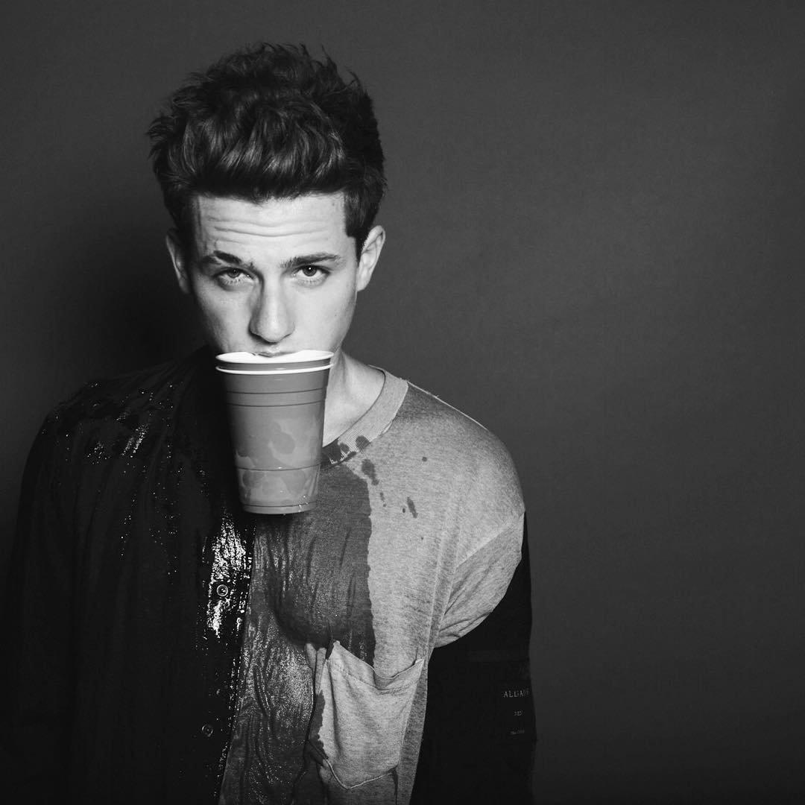

“ I'm a homebody times ten.”-Charlie Puth
Charles Otto Puth Jr., born December 2, 1991 is an American singer and songwriter. His initial exposure came through the viral success of his song videos uploaded to YouTube. Puth signed with the record label eleveneleven in 2011 after performing on The Ellen DeGeneres Show, while songwriting and producing material for other artists.
After initially signing with eleven-eleven after performing on The Ellen DeGeneres Show, Puth began contributing to songs and albums for other artists such as Cody Simpson, Livingston Taylor, and Skizzy Mars; as well as creating lite solo material and covers of popular songs. With primary intent on a solo career, Atlantic Records eventually sought the artist and released his debut single, "Marvin Gaye" featuring Meghan Trainor in 2015 to unanimous success. Coinciding with the single came his first feature, "See You Again", which he co-wrote, co-produced, and performed with Wiz Khalifa for the Furious 7 soundtrack as a tribute to Paul Walker. It peaked at number one on the US Billboard Hot 100 for 12 non-consecutive weeks. After the success of "See You Again", he gained worldwide recognition for multiple subsequent releases, including his next single "One Call Away". The single reached number 12 on the Billboard Hot 100, and topped charts in New Zealand, the Republic of Ireland, and the United Kingdom.
Puth's debut studio album, Nine Track Mind, was released in January 2016 to negative reviews from critics, and was preceded by the singles "One Call Away" and "We Don't Talk Anymore", which peaked at number 12 and number nine, respectively on the US Billboard Hot 100.
Image Source: www.peakpx.com